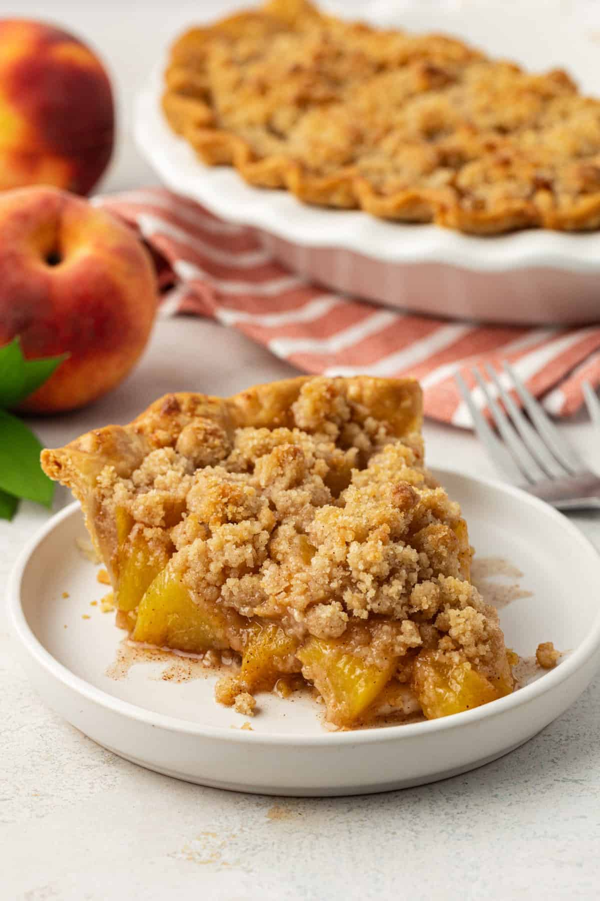
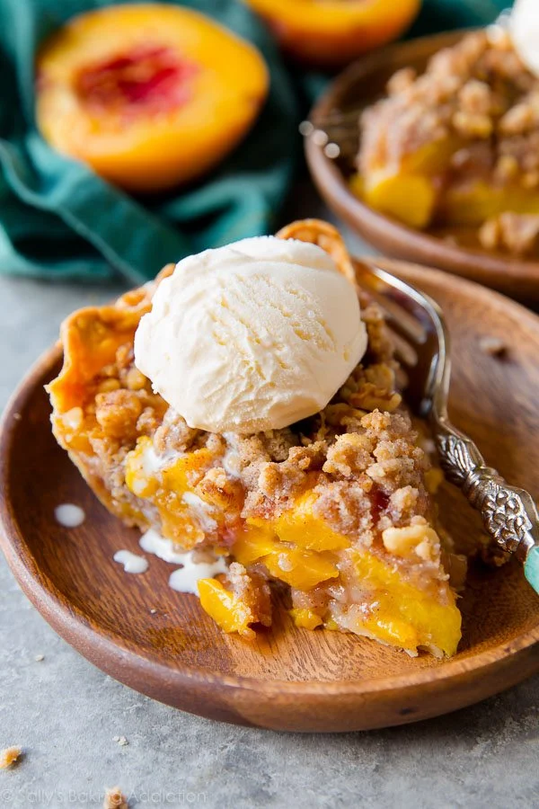
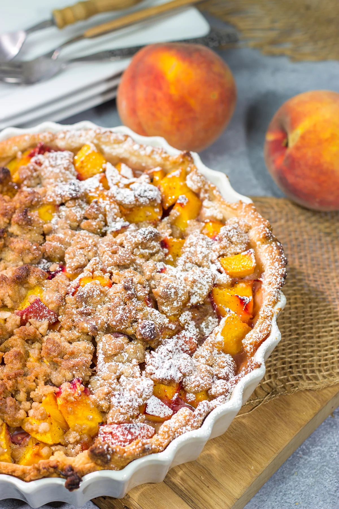

Home
Peach Crumble Pie



Description
Welcome to our kitchen! Today we’re sharing a simple and tasty Peach Crumble Pie recipe that’s perfect for summer days.
Made with fresh peaches and a buttery crumble topping, this pie is sure to become a family favorite.
Ingredients:
For the Filling:
- 4 cups fresh peaches (peeled and sliced)
- 1/2 cup sugar
- 1 tbsp lemon juice
- 1 tbsp cornstarch
- 1/2 tsp cinnamon
For the crumble Topping:
- 1/2 cup all-purpose flour
- 1/3 cup brown sugar
- 1/4 cup unsalted butter (cold, cut into small cubes)
- 1/4 tsp salt
Pie Base:
- 1 9-inch pie crust (store-bought or homemade)
Steps:
Preheat your oven to 375°F (190°C).
- Prepare the filling: In a large bowl, mix peaches, sugar, lemon juice, cornstarch, and cinnamon.
- Pour the mixture into the pie crust evenly.
- Make the crumble: In another bowl, mix flour, brown sugar, and salt. Add butter and mix until crumbly.
- Sprinkle the crumble on top of the peach filling.
- Bake for 40-45 minutes or until the topping is golden brown and the filling is bubbly.
- Cool the pie before serving. Serve with vanilla ice cream for extra yum!